Living Tamil Association for World Literature (LTAWL)
The 2019 Vishnupuram Literary Circle Award went to the poet Abi, honoured at a day-long gathering of readers and writers in Coimbatore that ran from mid-morning until well past midnight — translated and adapted from the original Tamil account.
Poet Abi received the Vishnupuram Literary Circle Award for 2019. In the foreword to the commemorative volume released for the occasion, Iravu Neduyugam (“The Long Age of the Night”), Jeyamohan described Abi as a pioneering figure in abstract poetry within Tamil literature — a poet who gave shape to inner feeling and inward vision through imagery that owed nothing to plain, objective description. The award, instituted in 2010, had by then gone to a line of writers and critics including A. Madhavan, Bhoomani, Devadevan, Thelivathai Joseph, Gnanakoothan, Devathasan, Vannadhasan and C. Muthusamy, among others — a lineage the organisers placed Abi's work within.
The ceremony took the form of a full day of literary sessions in Coimbatore, held at the Rajasthani Sangha hall, with the principal guests housed at Fortune Suites nearby. The organisers — among them Senthil, Ram Kumar, Vijay Suryan, Meenambikai, Selvendran and Srinivasan, with Rajagopalan coordinating the sessions overall — deliberately kept the event free of the usual trappings of a formal award function. Arangasamy, who welcomed the gathering and gave the organisational report, told the roughly 300 readers present, most of them young, that everyone attending was as much an organiser of the day as anyone on a committee.
The day unfolded as a sequence of sessions built around different poets, each introduced and discussed in turn — among them Isai, Yuvan Chandrasekar, K. N. Senthil, Venpaa Geethayan and Amirtham Surya — before the programme turned to Abi in the evening. Guests from outside Tamil writing took part as well: the Assamese writer Jannavi Barua spoke about her own work and the experience of writing from outside the literary mainstream, and the Malayalam poet K. G. Sankarpillai spoke of an idealism rooted in justice that had shaped his poetry. Sessions on other poets drew out open disagreement among the writers present — Perundevi, Lakshmi Manivannan and others argued openly over competing readings of Tamil poetry, in what the account described as good-humoured rather than bitter contention. A literary trivia contest during the lunch break, run by Senthil, kept the mood informal between sessions.
Abi's own session began with the screening of a short documentary by K. P. Vinodh, built around the abstract and philosophical character of his poetry. Senthilkumar read out the citation announcing the award, and it was presented to Abi jointly by Jannavi Barua and K. G. Sankarpillai, with his family present to see it. A book on Abi's work was released at the same gathering by Jannavi Barua. Devotional singing framed the ceremony: Kannan Dandapani's daughter Maghilmalai sang a Devaram hymn, and Jaan Sundar performed a song from the repertoire associated with the singer Noor Jehan. The poet and musician Ravichandran had set several of Abi's poems to music and sang them for the gathering. Abi himself spoke last, reflecting on the outlook behind his poetry rather than simply thanking those present.
The formal proceedings ran from around ten in the morning to about half past eight at night, but the gathering did not disperse afterward. Writers who had travelled down together by train — among them Devadevan and Pokkan — carried an argument begun en route straight into the night's conversation, and Suresh Kumar Indrajit spoke about matters closer to his own life. The informal talk continued in Abi's room until nearly two in the morning. The account of the day closed by describing the whole gathering as a kind of small island — a space where readers and writers could disagree with each other pleasantly, without the day curdling into rancour, at a time when such spaces felt increasingly rare.
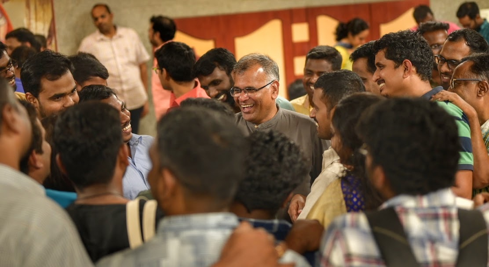
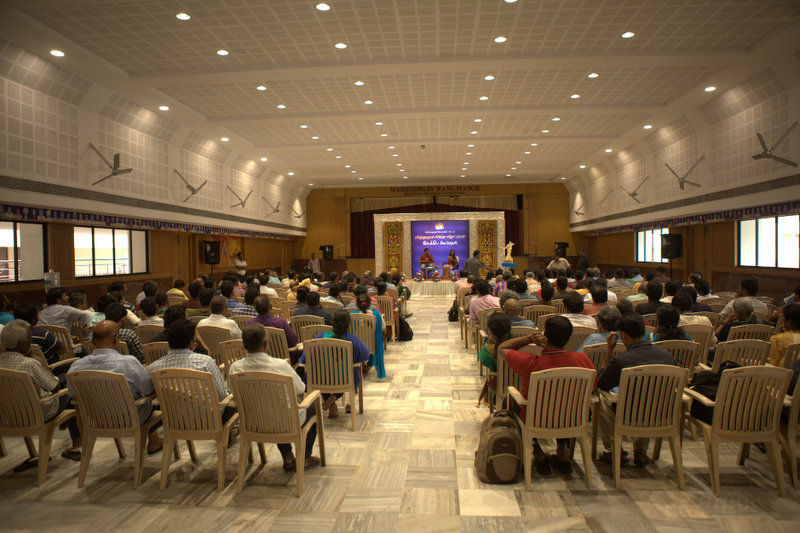
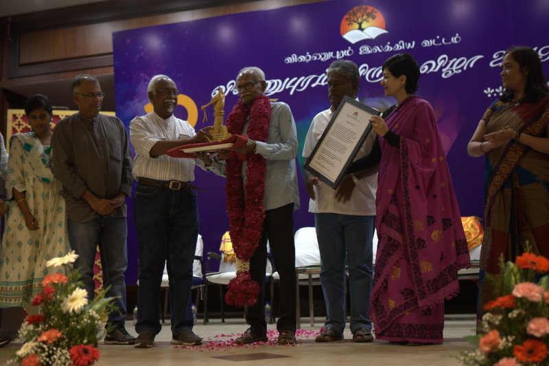
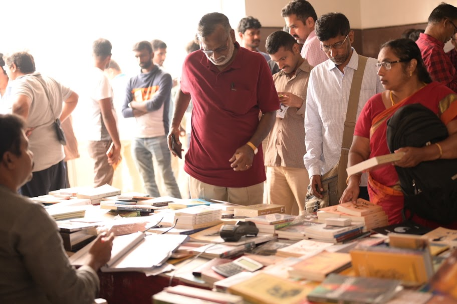
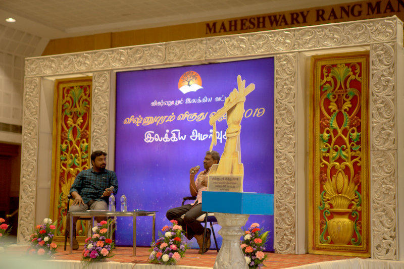
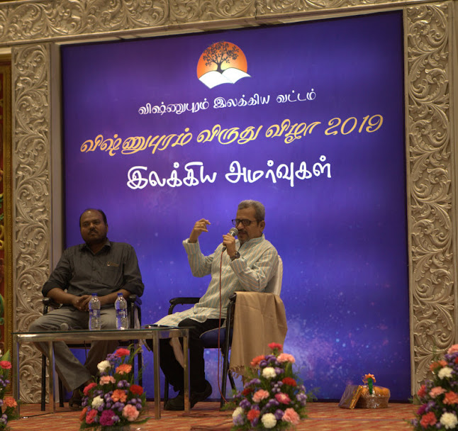
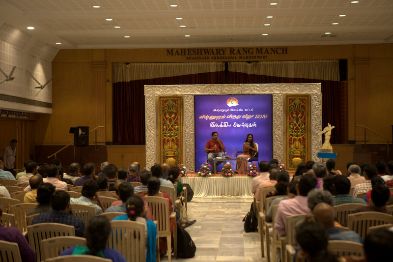
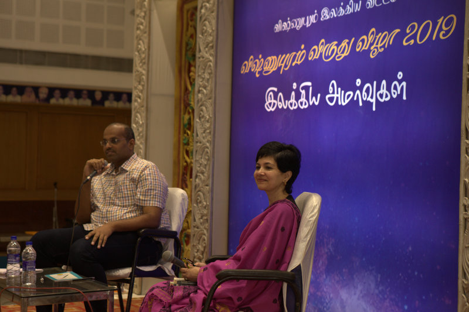
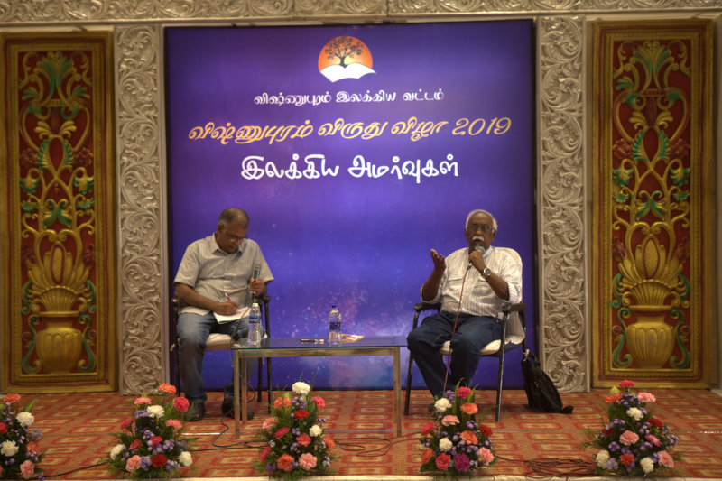
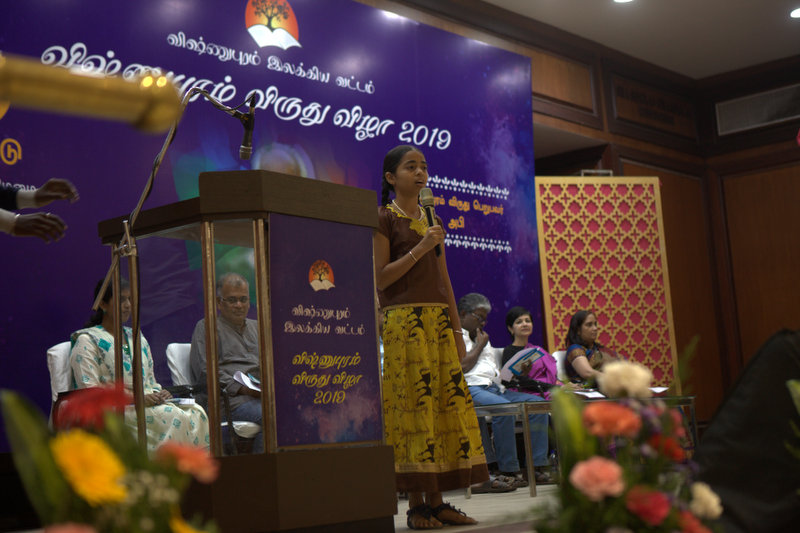
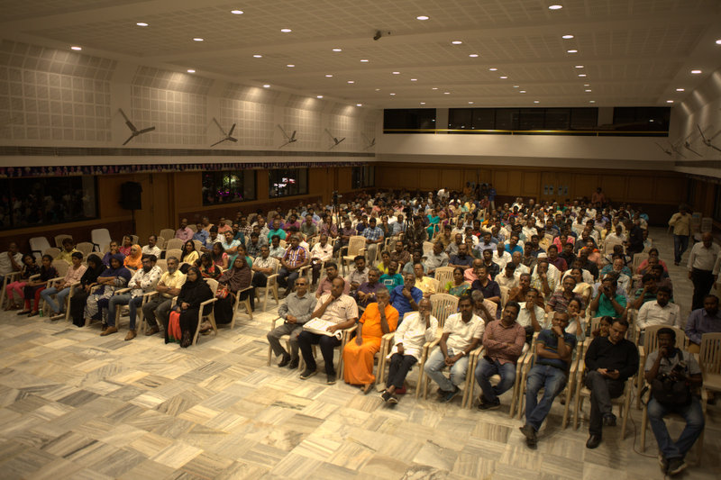
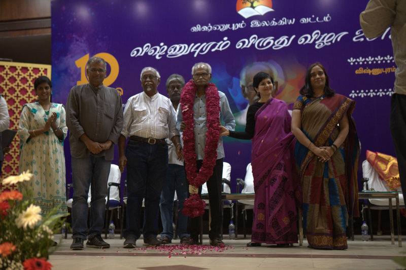
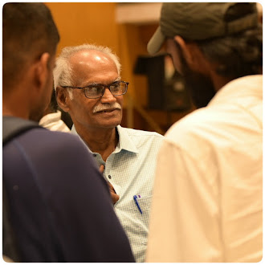
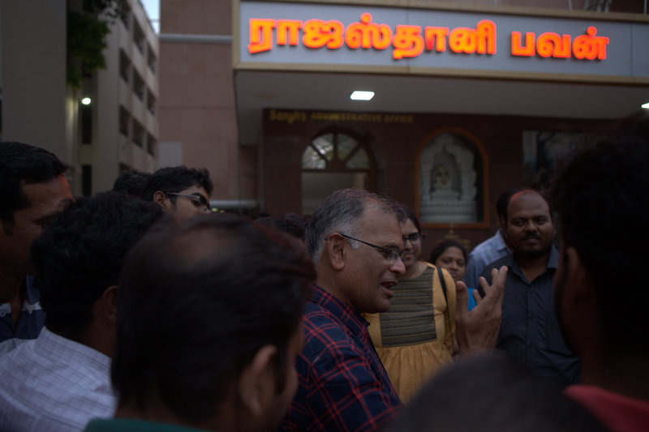
Translated and condensed from the original Tamil account: jeyamohan.in/129021 and jeyamohan.in/128310 · Watch highlights